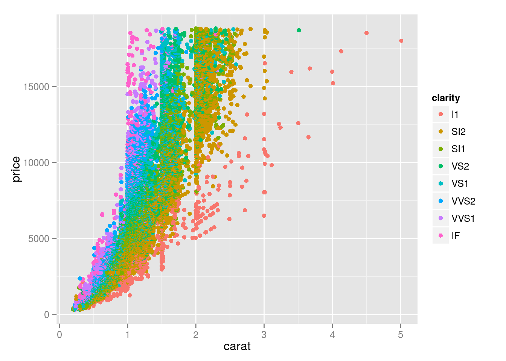

This is an R Markdown document. Markdown is a simple formatting syntax for authoring HTML, PDF, and MS Word documents. For more details on using R Markdown see http://rmarkdown.rstudio.com.
You can easyily embed your R code into your document, along with math expressions of course.
\[ \text{speed} = \text{dist} + \text{dist}^2 \]
library(ggplot2)
summary(cars)## speed dist
## Min. : 4.0 Min. : 2
## 1st Qu.:12.0 1st Qu.: 26
## Median :15.0 Median : 36
## Mean :15.4 Mean : 43
## 3rd Qu.:19.0 3rd Qu.: 56
## Max. :25.0 Max. :120lm(speed ~ dist + I(dist^2), data=cars)##
## Call:
## lm(formula = speed ~ dist + I(dist^2), data = cars)
##
## Coefficients:
## (Intercept) dist I(dist^2)
## 5.14396 0.32745 -0.00153You can embed plots too. It’s also possible to hide the code generating it.
qplot(carat, price, color=clarity, data=diamonds)
First it’s simple and elegant. Note that I only embedded the R code into this documnt, not the outputs or figure files. When I build the doc later, contents are automatically updated. So it’s easy to change minor parts of your report when you change some logic.
Another reason if the document is written in markdown and can be converted to HTML, PDF and even MS Word formats. I can concentrate on the logics and contents. If I’m writing in \(\LaTeX\), I have to watch those wired expressions all day long.
It’s very easy to share your document with your fellows. You can share the source Rmd files with emails, a better way is to host your code on Gihub, and share the repository link. The most convinent way is to publish your code on the way and send your friend the direct link of the document. You can update the content later and the page on the web is up to date too. There are two free options: RPubs(Not in CHINA) and Shinyapps. If you want to share a folder, that is multiple related seperated docs, the later is the only option. And in fact shiny is more than that.
What is shiny? In short, R Markdown and shiny together support fully interactive documents. Here is an example:
Take a look at the following example.